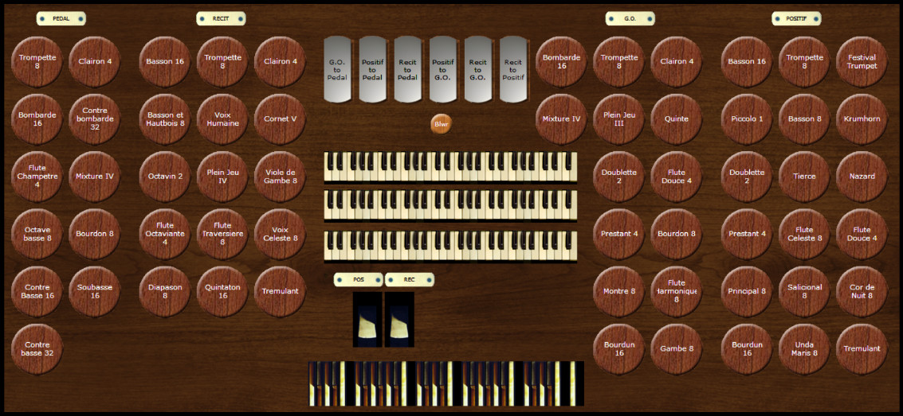

Welcome to the Metz Project
The Metz Project is an effort to build virtual pipe organs for Hauptwerk based primarily on the
Notre Dame de Metz samples from Milan Digital Audio. The project consists of a set titled Metz Plus, which incorporates samples from three sets:
Organ Console

Features
Metz Plus includes the following:
- All stops from the original Metz are present.
- The Recit and Positif divisions are under expression.
- The Positif includes a Krumhorn and an unenclosed Festival Trumpet using samples from the Rotterdam. It also includes a 16 foot Bourdun borrowed from the Grand Orgue, voiced slightly softer than the Grand Orgue stop.
- The Grand Orgue includes a Mixture IV using samples from Velesovo.
- The Pedal includes the following stops borrowed from the Grand Orgue: Clairon 4, Mixture IV, and Bourdon 8.
Requirements
- This set has been tested with Hauptwerk 4 Advanced Edition.
- The Metz set must be installed.
- The Velesovo and Rotterdam demo sets are optional. To load the organ without these sets installed, change the Rank enabled setting to No for all ranks marked Velesovo and Rotterdam in the Load Organ dialog box.
- Memory usage: With Hauptwerk 4.2.1, Windows Task Manager shows the following memory usage for Hauptwerk with Metz Plus loaded:
- 16-bit, compressed, all sample loops and releases, 5581 MB
- 16-bit, compressed, only first sample loop, all releases, 4390 MB
Installation
To install, download Metz Plus.odf and copy the downloaded file into your Hauptwerk installation's OrganDefinitions folder. On my computer, this folder's location is C:\Hauptwerk\HauptwerkSampleSetsAndComponents\OrganDefinitions. You should then be able to load the organ in Hauptwerk by choosing Organ > Load Organ from the Hauptwerk menu; Metz Plus should appear in the list.
{kind=link}